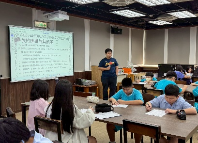

📚 系統化螺旋扎根 × 權威科學數據實證
七至九年級螺旋進化地圖 ＆ 新北市「SR 最高進步獎」
拒絕使用坊間現成測驗卷！閱推與國文社群連續 3 年自編《國文小尖兵》4 冊與《新版 ORID 閱讀護照》3 代改版！
🌱 七年級｜奠基探索期
🔥 八年級｜深化思辨期
🦅 九年級｜自主實戰期
扣合 Y 閱己・心靈開門 ＆ E 數位賦能
檢核實績：全校《ORID 閱讀護照》100% 收齊
七年級：向內探索・建立閱讀自信與美感轉譯
新生入學即完成臺師大 SR 適性閱讀診斷，搭配《閱讀護照》P.6〈SR 選書攻略〉找到命定好書；並結合自然校本「能源好好玩」入館檢索綠能文獻！
📘 自編《國文小尖兵》七上(論語/孟子/古詩)、七下(唐宋詩)
🧭 《新版閱讀護照》ORID 四層次寫作單
🎨 【國文×視藝】手繪／AI 提示詞閱讀明信片
🌳 〈遇見一株樹：數位眼×詩人心〉平板觀察寫詩
⚡ 【自然×圖資】綠能文獻檢索與萬聖節科學怪談接龍
♻️ 《安妮新聞》青春濃霧展＆環保紙膜雕塑


📊 臺師大 SR / DACC 適性閱讀常模大數據
科學數據鐵證：突破「長文看不懂」痛點！
歷經兩年《國文小尖兵》晨讀、16 週讀報三部曲與跨域課程介入，本屆八年級於新北市國中 SR 前後測評比中，高階向度顯著躍升，奪得全市「SR 最高進步獎」！
💝 專業反向輸出社區：首創「扶輪之子月月讀」公益共伴
本校研發之「ORID 閱讀學習單」獲在地扶輪社高度肯定，指定為本校「扶輪之子」每月請領獎學金之必修成長指標，將單向金錢資助轉化為雙向心靈賦能！